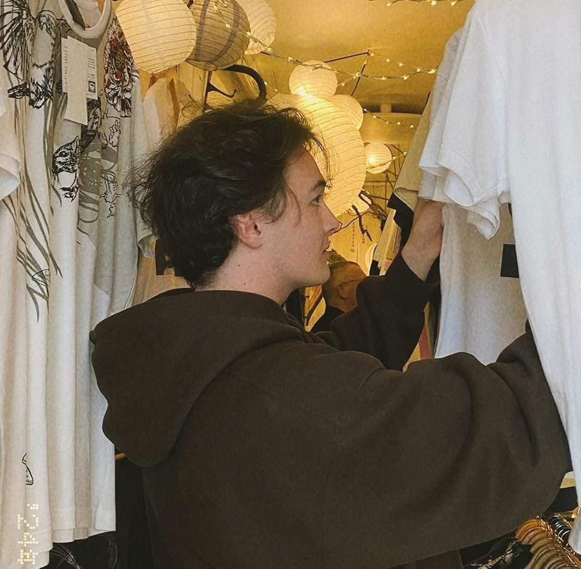

Artworks
Concept art, illustrations, environment studies, and visual explorations. Click any thumbnail to view.



Who Is Riku Yuki Darroch?
My name is Riku Yuki Darroch. I studied at Victoria University of Wellington
and my degree is in Design Innovation majoring in Communication Design and Game Design.
I grew up in Te Anau, a small town in Southland New Zealand, and with my
Japanese Mother I have been back and forth between there and visiting
family in Ebetsu, Hokkaido, Japan. Although I struggled with my identity as a child, I now embrace it as a unique perspective on the world and use it as inspiration in my creative work.
I consider my curiosity to be one of my biggest strengths. I particularly
love finding inspirations from unlikely places; of course from projects by
people in my field, but also from music, politics, history and sciences. I
particularly resonate with themes of class inequality, environmentalism,
cultural cross-pollination, and social commentary.
My creative practice is primarily in art, concept design and game design, however I also have experience with graphic design, video production, photography, writing, animation, and audio production.
The reason why I made this career decision is because I believe in the
power of expressing ideas through creative fields and its ability to inhibit
change. Art as a career is often seen as a non essential job, finding itself
first at the chopping block whenever convenient by those in power. But the
ability to express ideas through art is something that not many other forms
of communication can replicate quite as effectively. I am sure you have
watched a movie that taught you about yourself or changed the way that
you view the world. Perhaps not quantifiably, but the way that creative
projects teach about abstract concepts is so valuable and I want to harness
that. There is a magic you feel when you listen to a beautiful song or
see a beautiful painting that no amount of scientific analysis is capable
of describing. It's that mysterious power that art holds that is meaningful.
No matter when or where, innately humanity fights to create, whether
under an oppressive regime or on the cave man walls. Maybe to call out
to the cosmos to prove that we were real once, or to be remembered in
the future, perhaps there is something divine about creating that keeps us
picking up our tools.
"A Earth without art is just a rock" — Kendrick Lamar
- Strengths: Visual Design, Collaborative Working, Creative Ideation
- Softwares: Clip Studio Paint, Photoshop, Affinity, InDesign, DaVinci Resolve, Premiere Pro, FL Studio, Blender, Unreal Engine 5
- Values: Environment, Identity, Work Ethic, Narrative
Contact
For professional enquiries, commissions, and collaborations, please reach out via the channels below.
If you prefer another channel, feel free to suggest it and I will accommodate where possible.